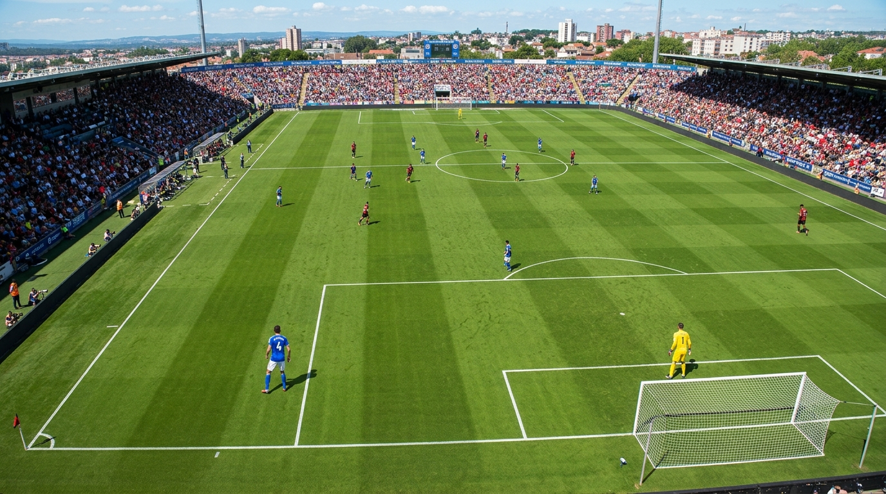

1. [Ponta-Esquerda]
É a zona de transição, onde ocorrem a distribuição de jogo e o combate pelo meio-campo.
2. [Ponta-Direita]
Ocupam a amplitude máxima no terço de ataque, responsáveis pela largura do time, jogadas de 1 contra 1 e cruzamentos.
3. [Círculo Central]
O Goleiro é a última linha de defesa na Grande Área, enquanto o Zagueiro compõe a sustentação defensiva.
4. [Zagueiro Central]
O Zagueiro Central afunda para receber do Goleiro e tem a opção de distribuição curta para o Zagueiro Esquerdo (aberto no canto) ou para o Camisa 5 no Círculo Central.
5. [Goleiro na Área]
O Zagueiro Esquerdo no canto inferior gera largura defensiva na esquerda, enquanto o Zagueiro Central estabiliza a sobra defensiva, permitindo que a equipe mantenha o bloco sustentado mesmo sob pressão.